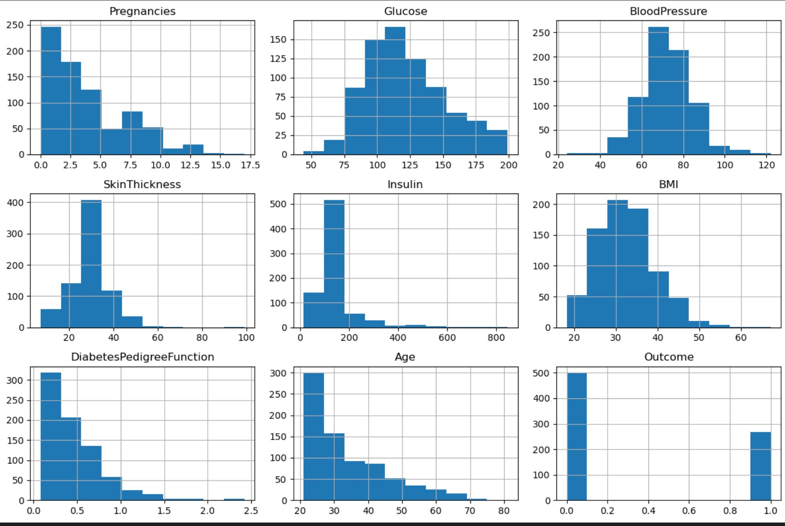
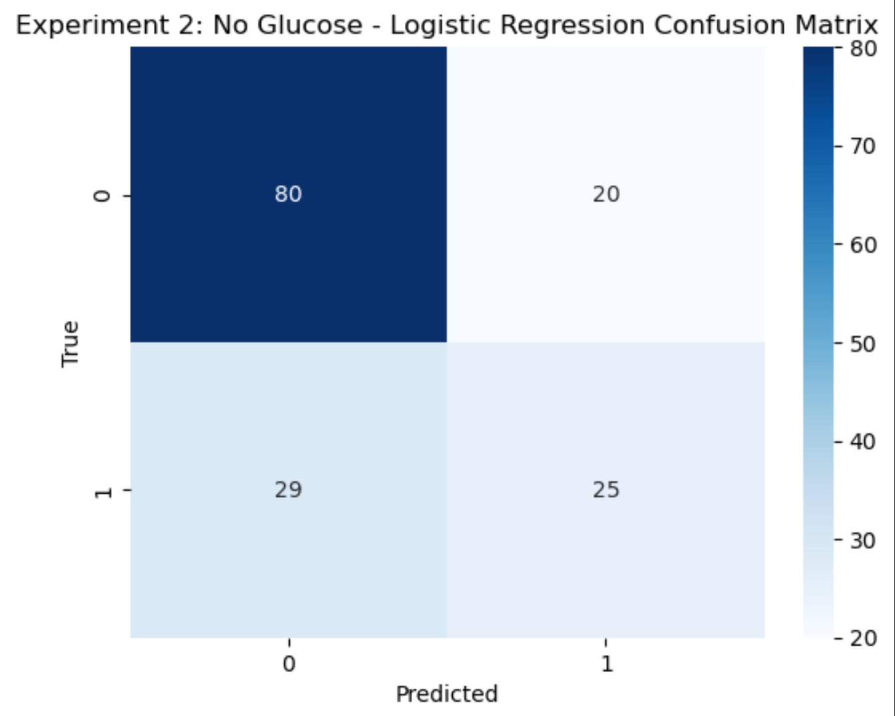
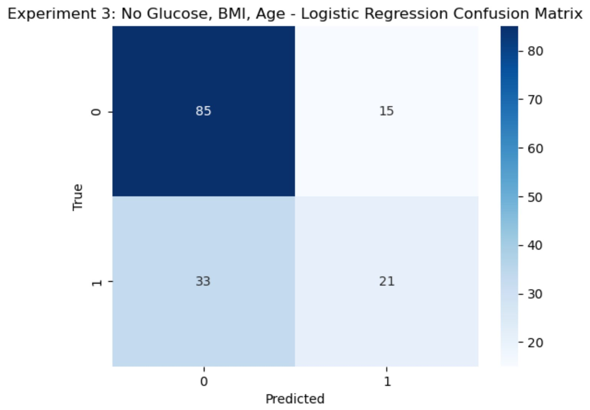

The Question That Started This
Diabetes has always been a part of my life — not just something I learned about in a classroom, but something I've watched up close in my own family. The daily routines, the careful meals, the glucose checks. And through all of it, one thing stood out: everything seemed to hinge on a single number. Blood sugar.
That observation became a question I couldn't shake: what if that number wasn't available? In real healthcare settings, data is missing all the time. A patient might not have had a recent glucose test. Records get lost. Tests don't get run. So if a prediction model completely depends on glucose to work — is it actually useful in the real world?
This isn't just an academic exercise. It's a question about whether predictive models can be robust — built to work even when the data isn't perfect. That's what this investigation set out to discover.
The Dataset
The Pima Indians Diabetes Dataset (sourced from Kaggle / UCI ML Repository) contains 768 patient records from Pima Indian women, each with 8 clinical measurements and a binary outcome: diabetic or not.
- Pregnancies — number of pregnancies
- Glucose — plasma glucose concentration (2-hour oral glucose tolerance test)
- Blood Pressure — diastolic blood pressure (mm Hg)
- Skin Thickness — triceps skinfold thickness (mm)
- Insulin — 2-hour serum insulin (μU/mL)
- BMI — body mass index (kg/m²)
- Diabetes Pedigree Function — a score reflecting family history of diabetes
- Age — in years
Target variable: Outcome — 0 = No Diabetes, 1 = Diabetes.
While exploring the data, I noticed that several features contained zero values in places where zero is medically impossible. A person cannot have a BMI of zero or a glucose reading of zero and still be alive. These weren't real measurements — they were placeholders for missing data, and they needed to be handled before any modeling could begin.
Exploratory Data Analysis
Before touching a model, I needed to understand the data deeply — what each feature looks like, where the patterns are, and where the problems are.

Fig 1. Distribution of all 9 variables after preprocessing. Insulin and SkinThickness are strongly right-skewed — most patients cluster at lower values with a long tail of high readings. Glucose follows a roughly bell-shaped distribution. The Outcome histogram reveals the class imbalance: approximately 500 non-diabetic cases versus 268 diabetic cases (~65/35 split). This imbalance matters — a model that always guesses "no diabetes" would still be 65% accurate, making raw accuracy a misleading metric on its own.

Fig 2. Correlation heatmap across all features. Glucose has the strongest correlation with Outcome at 0.49 — nearly double the next strongest predictors, BMI (0.31) and Age (0.24). This immediately confirmed the investigation's premise: glucose dominates, and its removal will meaningfully change how the model reasons. Notably, SkinThickness and BMI share a moderate correlation of 0.54, reflecting their shared relationship with body composition.
Data Preprocessing
The biologically impossible zeros in Glucose, Blood Pressure, Skin Thickness, Insulin, and BMI were treated as missing values and replaced with the column median, calculated only from valid (non-zero) entries.
Why median, not mean? The histograms showed that features like Insulin are heavily right-skewed with extreme outliers. The mean would be pulled upward by those extreme values, producing an imputed number that doesn't represent the typical patient. The median is resistant to that distortion.
Why not drop the rows entirely? With only 768 records, dropping all rows with missing values would remove a significant portion of the dataset, reducing statistical power. Median imputation preserves all records at the cost of some introduced smoothness.
- Data split: 80% training / 20% testing with stratification to preserve the 65/35 class balance in both sets
- Features standardized using
StandardScalerfor Logistic Regression — scaling was fit on training data only and then applied to test data, preventing data leakage - Tree-based models used raw unscaled values, as they are inherently scale-invariant
- Random seed fixed at 42 across all models and splits for reproducibility
Models & Why I Chose Them
Three models were selected deliberately to represent a spectrum from simple to complex, and from transparent to powerful.
- Logistic Regression — The interpretable linear baseline. It assumes a linear decision boundary and is sensitive to feature scale. If this performs well, the problem is linearly separable. If it struggles, it signals that non-linear patterns matter.
- Decision Tree — Captures non-linear relationships by splitting the feature space into regions. Easy to interpret, but prone to overfitting when the dataset is small and no depth constraints are applied.
- Random Forest (200 trees) — An ensemble that builds many trees on random subsets of data and features, then averages their predictions. More robust than a single tree, handles noise well, and provides built-in feature importance scores — making it ideal for understanding what the model relies on when key features disappear.
Experiments
Four feature configurations were tested across all three models, progressively stripping away predictive power to observe how each model degrades — and what it falls back on.
🧪 Experiment 1 — All Features
All 8 variables included. Sets the performance ceiling and confirms feature dominance before any removals.
🧪 Experiment 2 — Remove Glucose
The single most important feature is dropped. This is the core question: what's left when the dominant signal disappears?
🧪 Experiment 3 — Remove Glucose, BMI & Age
The three highest-correlated features are gone. Only moderate and weak signals remain.
🧪 Experiment 4 — Weak Features Only
Only the five lowest-correlated variables remain. Tests the absolute floor of predictive power.
Results

Fig 3. Accuracy of each model across all four experiments. The key story here is the shape of the decline — gradual, not sudden. Random Forest consistently leads and never falls below ~67%. Logistic Regression shows the sharpest drop from Exp 1 to Exp 2, reflecting its sensitivity to losing the strongest linear predictor.
The Real Cost of Missing Data
Accuracy tells you how often you're right. In healthcare, how you're wrong matters just as much. The confusion matrices below show where Logistic Regression fails across each experiment — and the pattern reveals something important.
Fig 4a. Exp 1 — All Features.
82 true negatives, 27 true positives.
18 false negatives.

Fig 4b. Exp 2 — No Glucose.
80 true negatives, 25 true positives.
29 false negatives.

Fig 4c. Exp 3 — No Glu/BMI/Age.
85 true negatives, 21 true positives.
33 false negatives.
Fig 4d. Exp 4 — Weak Only.
85 true negatives, 21 true positives.
33 false negatives.
Feature Importance: What the Model Relies On
Random Forest reveals its reasoning through feature importance scores — how much each variable reduces prediction error, averaged across all 200 trees. These charts answer the question: when glucose disappears, what does the model turn to?

Fig 5. With all features, Glucose accounts for ~27% of decision-making weight — nearly double BMI's contribution (~15%). The dominance is unmistakable. Everything else is secondary.

Fig 6. Without Glucose, BMI rises to ~21%, followed by DiabetesPedigreeFunction and Age. The model doesn't collapse — it redistributes weight to the next best signals.
Why This Matters Beyond the Classroom
In real-world healthcare, complete data is the exception — not the rule. Patients show up without lab results. Records are incomplete. Rural clinics may lack the equipment to run a glucose tolerance test. If a predictive model only works when every feature is available, it isn't a model built for the real world.
What this project shows is that machine learning models can remain meaningful even under data scarcity — but only if we understand which features are carrying the weight and how failure looks when they're gone. A model that degrades gracefully and whose failure mode is understood is far more useful than a black box that just stops working.
Limitations, Ethics & Reflection
- Population specificity and bias: This dataset represents only Pima Indian women. Diabetes risk factors differ significantly across ethnicities, genders, and geographic regions. A model trained here should not be applied to a broader population without revalidation.
- Imputation assumptions: Replacing missing values with medians is a reasonable first step — but it's an assumption, not a measurement. For features like Insulin, where zeroing is especially common, the imputed values may not reflect real patient physiology.
- Class imbalance not corrected: The 65/35 class split was not addressed with resampling or class weighting. This likely suppresses recall for the diabetic class — one reason false negatives rise in later experiments.
- No hyperparameter tuning: The Decision Tree had no depth constraint, making overfitting likely. A tuned model would likely outperform what's reported here.
- Ethical use: These models are research tools — not diagnostic instruments. Predicting that someone "likely has diabetes" should never replace a clinical evaluation.
Conclusion
This project started as a prediction task and became something more meaningful. By deliberately removing the most important feature, I was able to see how models adapt, what they fall back on, and precisely where — and how — they start to fail.
The core finding: even when the most important data disappears, patterns remain. The model doesn't know glucose is gone — it just works with what it has. And in this dataset, what's left is enough to still say something real about diabetes risk.
For me, this connects back to what I observed growing up. Diabetes isn't just one number. It's a combination of family history, body composition, age, and physiology building over time. The data reflects that complexity. And so, to its credit, does the model.
Resources & AI Transparency
Dataset: Smith, J.W., Everhart, J.E., Dickson, W.C., Knowler, W.C., & Johannes, R.S. (1988). Pima Indians Diabetes Dataset. UCI Machine Learning Repository. Available via Kaggle.
Libraries: Python 3, pandas, NumPy, scikit-learn, matplotlib, seaborn.
AI Transparency: AI tools (Claude, ChatGPT) were used to assist with HTML structure and writing clarity. All research questions, analytical decisions, experimental design, model selection, interpretation, and conclusions were completed independently.
📓 Technical Report: View Full Technical Report